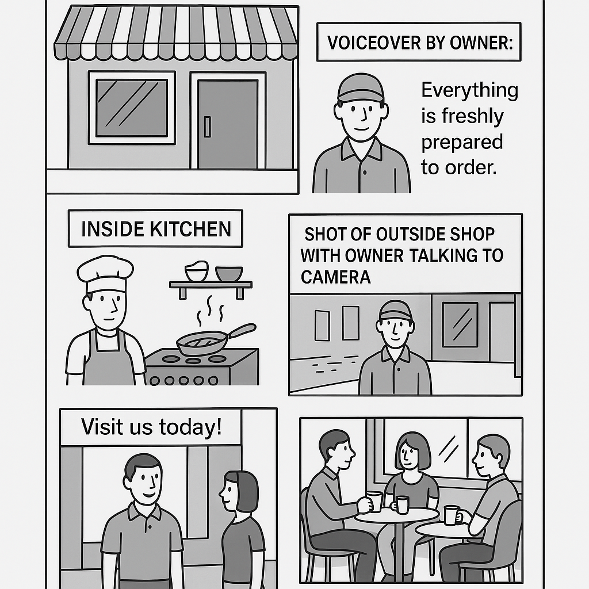

Use the same scenarios as 9-Mark Ninja to write a full 9-mark answer, then send it to an AI to mark and give feedback.
Question text goes here.

All done! This text has been copied to your clipboard.
Open one of the AI tools below, paste it in, and run it to get a mark and feedback.
Your prompt has been copied ✆In the AI chat box, press Ctrl+V (or ⌘+V on Mac), then press Enter.